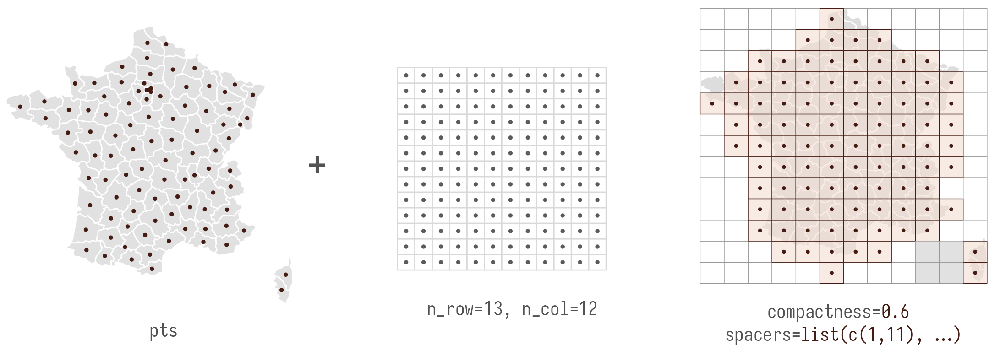
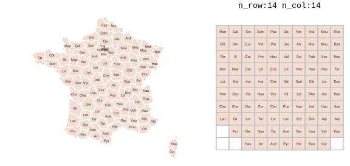
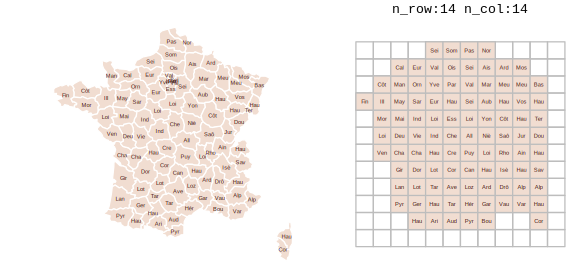
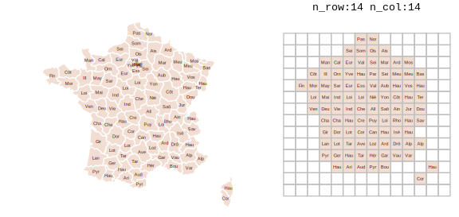
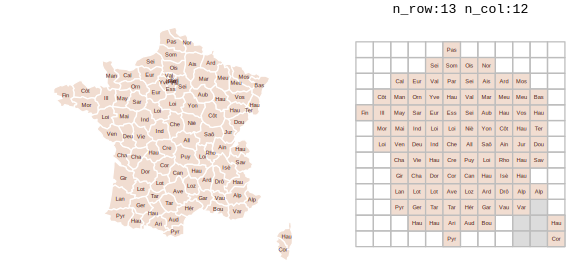

gridmappr is an R package that automates the process of generating small multiple gridmap layouts. Given a set of geographic point locations, it creates a grid with stated row, column dimensions, and places each point in a grid cell such that the distance between points in geographic space and that within the grid space is minimised. The package is an R implementation of Jo Wood’s Observable notebooks on Linear Programming solvers and their application to the Gridmap Allocation problem.
Gridmap allocation using compactness with points_to_grid()
Gridmaps, sometimes called tilemaps, are maps with spatial units allocated into a spatially-arranged grid of cells of regular size. Many gridmaps are generated manually, the widely used LondonSquared layout of London boroughs for example. For automatic allocation of spatial units to grid cells, various constraints might be considered, see Meulemans et al. 2017 for a formal discussion and evaluation.
gridmappr allocates geographic point locations to grid cells such that the total of squared distances between geographic and grid locations is minimised. Each point is allocated to one grid cell only and a cell in the grid can contain no more than one geographic point. The grid must therefore contain at least as many cells as geographic points.
The allocation is optimised with a compactness parameter, scaled between 0-1. A value of 0.5 attempts to place each point at its relative geographic position scaled within the bounds of the grid; a value of 1 attempts to place each point as close to the centre of the grid as possible; compactness closer to 0 allocates cells increasingly towards the edge of the grid.
The main allocation function to call is points_to_grid(). This will return grid cell positions (row and column identifiers) for a given set of geographic locations. It is paramerised with:
-
ptsA tibble of geographic points (x,y) to be allocated to a grid. -
n_rowMaximum number of rows in grid. -
n_colMaximum number of columns in grid. -
compactnessOptional parameter between0and1where0allocates towards edges,0.5preserves scaled geographic location and1allocates towards centre of grid. Default is1(compact cluster). -
spacersOptional list of grid cell locations defining grid location of fixed spacers which cannot be allocated points. Coordinates are in (row,column) order with origin(1,1)in bottom-left. Default is an empty list.
Installation
You can install the development version of gridmappr from GitHub with:
# install.packages("devtools")
devtools::install_github("rogerbeecham/gridmappr")Example allocations
French Départements
For generating a gridmap layout of France’s 96 départements, first try some candidate grid configurations. Remembering that any grid must contain at least as many cells as spatial units, grids with 10x10, 12x12 and 14x14 are trialed:
-
n_rowSet to 10, 12, 14 -
n_colSet to 10, 12, 14 -
compactnessSet to .6, attempting to preserve the geographic layout with a degree of compactness around the grid centre.
Notice that the smaller the grid dimensions, the more graphic space we have for encoding data, at the expense of spatial precision; the larger the grid dimensions, the closer that layout approximates to real geography, at the expense of graphical space.
# Create df of point locations.
pts <- france_deps |> st_drop_geometry() |>
select(area_name = name, x, y)
# Create gridmap layout.
solution <- points_to_grid(pts, n_row=10, n_col=10, compactness = .6)
# Create gridmap layout,.
solution <- points_to_grid(pts, n_row=12, n_col=12, compactness = .6)
# Create gridmap layout.
solution <- points_to_grid(pts, n_row=14, n_col=14, compactness = .6)
After some exploration, a 13x12 grid, seems to provide a reasonable balance between graphic space and geographic context (shape and adjacency). However, that layout implies that Corsica is contiguous with mainland France. At this point, it is worth adding spacers – grid cells that further constrain the distribution by not allowing points to be allocated to them. Spacers are defined as a list in (row, column) order with the origin (1,1) in bottom-left. To ensure Corsica is separated from mainland France, the first three rows from the 11th column and first two from the 10th column are excluded.
# Spacers to separate Corsica from mainland.
spacers <- list(
c(1, 11), c(2, 11), c(3, 11), c(2,10), c(1,10)
)
# Point centroids for real départements.
pts <- france_deps |>
st_drop_geometry() |>
select(area_name = name, x = x, y = y)
solution <- points_to_grid(pts, 13, 12, .6, spacers)
US States
There are of course other well-known geographies where some manual control over the allocation is desirable. In a gridmap of the US, for example, separating Alaska, Hawaii and Puerto Rico.
# Grid dimensions.
n_row <- 7
n_col <- 12
# Point centroids for US states.
pts <- us_states |>
st_drop_geometry() |>
select(area_name = STUSPS, x, y)
# Derive layout solution.
solution <- points_to_grid(pts, n_row, n_col, .8)
Again this can be addressed by judiciously inserting spacers.
# Grid dimensions.
n_row <- 7
n_col <- 12
# Spacers to separate non-contiguous states from mainland.
spacers <- list(
c(4, 2), c(4, 3),
c(3, 5), c(3, 4), c(3, 3), c(3, 12), c(3, 11),
c(2, 4), c(2, 5), c(2, 6), c(2, 7), c(2, 8),
c(1, 6)
)
# Point centroids for US states.
pts <- us_states |>
st_drop_geometry() |>
select(area_name = STUSPS, x, y)
# Derive layout solution.
solution <- points_to_grid(pts, n_row, n_col, .9, spacers)
Leicestershire Wards
Geographies with ‘holes’ are a particular challenge for grid layouts. In the example below, compactness is set to zero, meaning that allocations are pushed to the edge of the grid, preserving the internal space containing the separate City of Leicester.
# Grid dimensions.
n_row <- 14
n_col <- 14
# Point centroids for Leicestershire wards.
pts <- leics_wards |>
st_drop_geometry() |>
select(area_name = ward_name, x = easting, y = northing)
# Derive layout solution.
solution <- points_to_grid(pts, n_row, n_col, 0)
Example Uses
Beecham, R., Dykes, J., Hama, L. and Lomax, N. (2021) ‘On the Use of ‘Glyphmaps’ for Analysing the Scale and Temporal Spread of COVID-19 Reported Cases’, ISPRS International Journal of Geo-Information, 10(4), pp. 213–. doi: 10.3390/ijgi10040213.
Beecham, R. and Slingsby, A. (2019) ‘Characterising labour market self-containment in London with geographically arranged small multiples’, Environment and Planning A: Economy and Space, 51(6), pp. 1217–1224. doi: 10.1177/0308518X19850580.
Wood, J., Badawood, D., Dykes, J. and Slingsby, A. (2012) ‘BallotMaps: Detecting name bias in alphabetically ordered ballot papers’, IEEE Transactions on Visualization and Computer Graphics, 17(12), pp. 2384–2391. doi: 10.1109/TVCG.2011.174.